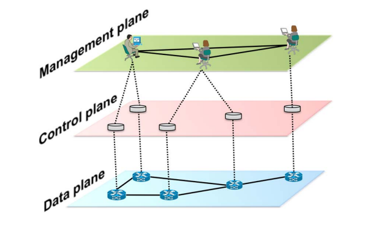

Conceitos Básicos do OpenFlow
Definição e Funcionamento
O OpenFlow é um protocolo de comunicação aberto e padronizado, mantido pela Open Networking Foundation (ONF), que atua na camada de abstração entre a lógica de decisão e a infraestrutura de encaminhamento em Redes Definidas por Software (SDN). Ele fornece uma interface comum para que o plano de controle interaja diretamente com o hardware de comutação, eliminando a dependência de arquiteturas proprietárias e fechadas de fabricantes de redes.
Na prática, isso permite que o comportamento dos switches seja programado de forma centralizada, a partir de um software externo a eles.
Plano de Controle e Plano de Dados
O paradigma OpenFlow consolida o desacoplamento físico e lógico dos planos operacionais da rede, substituindo a arquitetura tradicional e descentralizada em que cada nó computa de forma independente seu próprio estado de encaminhamento (Stallings, 2016).
Plano de Dados (Data Plane ou Forwarding Plane)
- Escopo: Restrito aos elementos físicos ou virtuais de comutação.
- Papel: Executar o encaminhamento de pacotes em altíssima velocidade em nível de linha (line-rate). O plano de dados não possui inteligência autônoma para calcular caminhos ou executar algoritmos complexos de roteamento distribuído (como OSPF ou BGP). Ele apenas executa as regras instaladas pelo plano de controle.
Plano de Controle (Control Plane)
- Escopo: Externalizado do hardware de encaminhamento e centralizado em um elemento lógico de software.
- Papel: É a camada responsável pela inteligência da rede. Mantém o estado global da infraestrutura, reconstrói continuamente a topologia e traduz políticas de segurança, balanceamento de carga ou qualidade de serviço em entradas de fluxo concretas.
- Modos de Operação: Pode instalar regras de forma reativa ou proativa, como detalhado na Seção 3.2.
